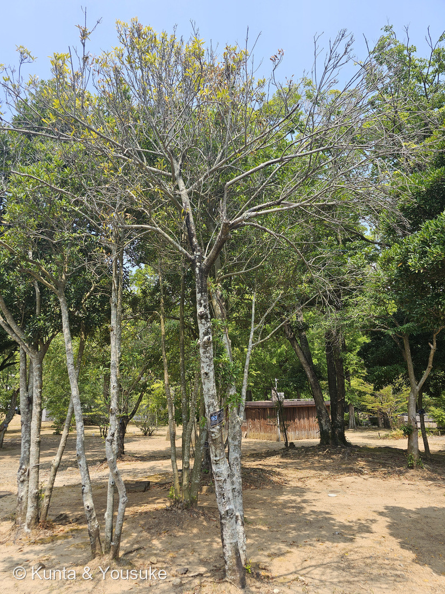
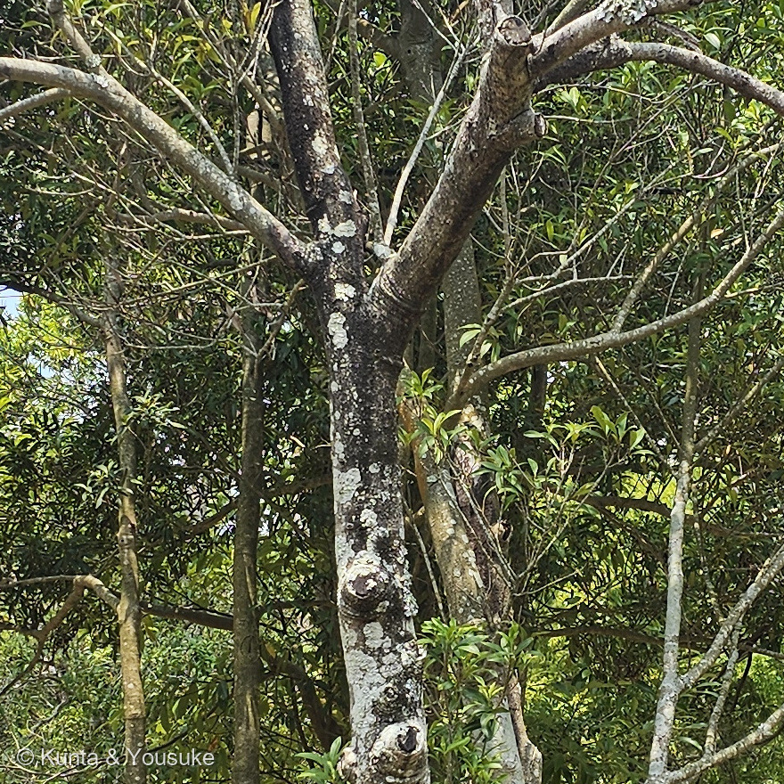
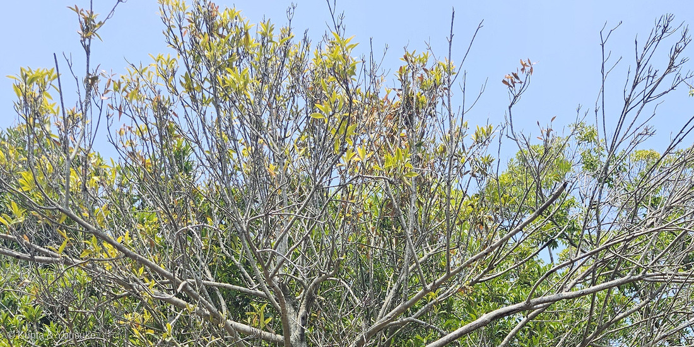
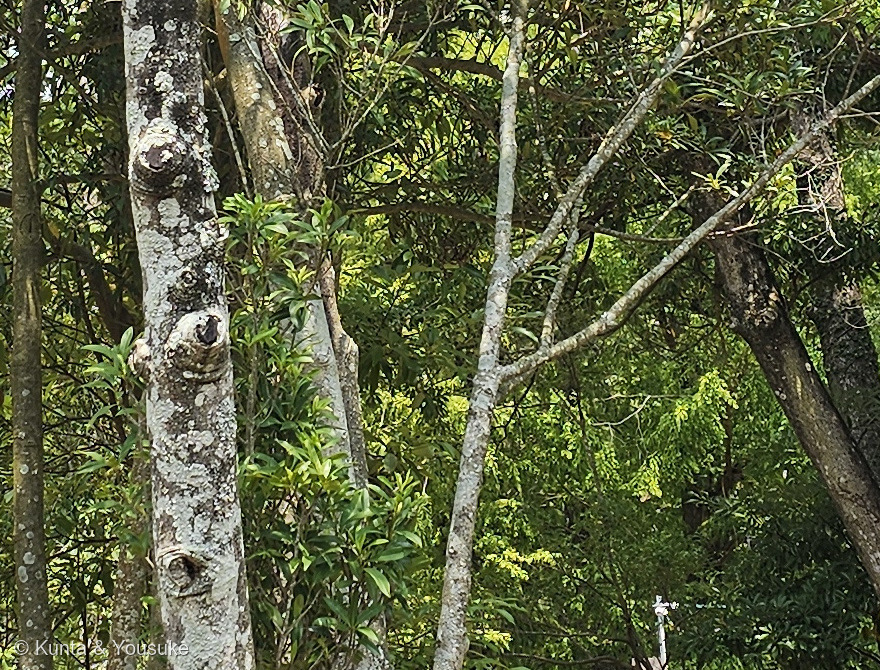

地図を読み込んでいるよ…
🔍 写真も地図も、押しているあいだ拡大して見られるよ（スマホは指を置いてすこし待ってね）。
🌍 の地図＝この子がもともと自生している場所を緑に。日本（本州の千葉県以西、四国、九州、琉球列島）、中国、台湾、ベトナム、ミャンマー。暖地の常緑樹林の中に生え、とくに海に近いスダジイ林に特徴的に出てくる木。くわしくは下の地図の説明を見てね。
⭐日本の暖かい海べりと、その先の大陸・島じまの木だよ。三河の植物観察は「在来種 本州（千葉県以西）、四国、九州、中国、台湾、ミャンマー、ベトナム」とし、日本語版Wikipediaは「千葉県以西の本州から四国、九州、琉球列島まで」とする。園の名札は「日本（関東南部〜沖縄）、中国、台湾、ベトナム、ミャンマー」と書いていた。⚠⚠この緑は、ほんとうよりずっと広いよ＝出典は「本州（千葉県以西）」としか書いていないので、ぼくは海に面した県だけを塗った――⭐この木は海に近い常緑樹林の子だから、県ぜんぶではなく、海岸線にそった細長い帯だと思って見てね（259 タブノキと同じ読み方だよ）。⚠東京都は塗っていない＝塗ると関東ぜんたいに生えているように見えてしまうから（258 ナギの式根島・八丈島と同じ判断だよ）。⭐⭐⭐この地図でいちばん大事なのは、北のはし＝千葉県が、この木の北限なんだ――Ecological Research（2010年）の保全研究は、千葉県の東京大学演習林を「この種の北限」として調べている＝⭐そこで分かったのが「いまいる場所の88.6%が、明治のおわりまでアカマツ林だったところ」ということ（⭐本文を見てね）。⚠中国の省は、efloras と POWO のページがぼくの手元から開けなかったので（証明書と403のエラー）、検索結果の要約から拾った12の省を塗ったよ＝安徽・福建・広東・広西・貴州・海南・湖北・湖南・江西・四川・雲南・浙江。⚠チベット（西蔵）を挙げる要約もあったけれど、もうひとつの要約には無かったので塗っていない／⚠カンボジアも一つの要約にしか出てこなかったので、塗っていないよ。⭐ちがう読み方をしたので、正直に書いておくね。⭐⭐そして、学名のふるさとは貴州省＝この種を発表したレヴェイエの『貴州植物誌』（1914-15）は、中国の貴州で採られた標本にもとづいている（IPNI）＝⭐和名の「大明（中国）」も、学名の生まれた場所も中国を指しているのに、じつは日本の在来種――⚠牧野が「中国原産と思われた」と書いたのは、そういうことだよ。⭐ぼくらが会ったのは長崎の動植物園に植えられた木＝⭐⭐でも長崎県はこの緑の中だから、ふるさとの内側で会ったことになる（259 タブノキと同じで、258 ナギや257 シマサルスベリとは、そこがちがうよ）。⭐同じサクラソウ科の147 サクラソウは、東アジアの湿った草地の草＝⚠ふるさとも姿もまるでちがう二人が、同じ科なんだ。⭐おまけのヤブコウジは、北海道の南部から九州までの林の下＝⭐こちらのほうが、ずっと北まで届いているよ。
⚠ 地図は国（日本と中国だけ県・省）までしか塗れないから、ほんとうの分布より広く見えていることがあるよ。地図はだいたいの場所。正確なところは、上の文を見てね。
タイミンタチバナ（大明橘）
Myrsine seguinii H.Lév.
属名の意味 · ⭐⭐Myrsine＝古代ギリシャ語でミルテ（ギンバイカ） 中国名 密花樹（花が密な木） 別名 ヒチノキ・ソゲキ
サクラソウ科 · Primulaceae（タイミンタチバナ属 Myrsine・ツツジ目 Ericales）── ⭐図鑑で2人目のサクラソウ科（147 サクラソウ。⚠ただし亜科はちがう＝こちらはヤブコウジ亜科 Myrsinoideae）／⚠むかしはヤブコウジ科 Myrsinaceae に置かれていた木だよ
燻太さんの言葉「葉っぱも樹皮も普通の木。でも気になったのは、タチバナと名がつくけどサクラソウ科って名札が言ってること。そして、名札の写真を見て、サクラソウ科に見えないと感じたのが2点目。」「いつか花を咲かせた状態のこの植物を見てみたいね。」── ⭐気になったところが二つとも当たりで、しかも一つめは答えが逆さまだったよ
⭐⭐⭐⭐⭐ 名前と学名の由来 ── よその科の名前を、二つも借りている
- 和名タイミンタチバナ＝「大明橘」。⭐牧野富太郎はこう説いている＝「牧野はこれが大明橘で、明国産のタチバナ（マンリョウ属）を意味し、中国原産と思われたことに依るとする。」（日本語版Wikipediaが『牧野 新日本植物図鑑』1961を引いて）。
- 属名 Myrsine（ミルシネ）＝古代ギリシャ語の μυρσίνη（myrsinē）＝ミルテ（ギンバイカ）。⭐Flora of North America は「ディオスコリデスがミルテを指して使った名で、この属の植物のことではなかった」と書いている（"comes from Dioscorides' name for the myrtle, which did not refer to these plants"）。
- 種小名 seguinii は、人の名前。⭐この学名を発表したのはフランスの H. レヴェイエで、『貴州植物誌（Flore du Kouy-Tchéou）』288ページ、1914〜15年（IPNI）。⚠「セガンって誰？」は確かめきれなかった＝⭐同じレヴェイエが同じ貴州の植物につけた Symplocos seguinii の研究では、採集者 J. セガンを記念した名だと確かめられているけれど、⚠タイミンタチバナの seguinii について直接そう書いた出典は、ぼくには見つけられなかったよ。
- ⭐中国名は「密花樹」（mi hua shu）＝「花が密な木」。⭐⭐この名前は、あとの節でもう一度出てくるよ。
- ⭐⭐⭐⭐⭐ここが、この子のいちばん面白いところだと思う。──和名の「タチバナ」はミカン科の名前、属名の Myrsine はフトモモ科（ギンバイカ）の名前。⭐⭐つまりこの木は、和名でも学名でも、よその科の名前で呼ばれているんだ。
- ⚠でも、それは当てずっぽうじゃないよ。⭐ミカンのなかまも、ギンバイカも、タイミンタチバナも、みんな「常緑で、革質のつやつやした葉」を持っている。⭐⭐しかもギンバイカの実は「晩秋に黒紫色に熟す」（日本語版Wikipedia）──⭐タイミンタチバナの実も「10月頃に黒紫色に熟す」（園の名札）。
- ⭐⭐⭐⭐名前は、収れんの化石なんだと思う。──血のつながりのない三つの科が、同じ姿にたどりついた。⭐それを見た人が「あれに似ている」と呼んで、その呼び名が名前として残った。⭐⭐だから、名前と科が食いちがって見えるんだ。
⭐⭐ この植物のこと ── 森そのものにはならないけれど、森に名前をつける木
- 常緑の小高木で、高さは2〜7（10）m（三河の植物観察）。樹皮は灰白色（宇久井ビジターセンター）。
- 葉は革質で、長さ5〜12（17）cm・幅1〜3（6）cmの倒披針形〜線状長楕円形（三河）。鋸歯はない（日本語版Wikipedia）。
- ⭐⭐雌雄異株。「葉腋又は葉痕腋に花を3〜10個束生する」（三河）＝⭐枝の先ではなく、葉の付け根や、葉が落ちたあとのところに、小さな花がかたまってつくんだ。
- 果実は直径5〜6mmの球形の核果（三河）。熟すと黒紫色になる。
- ⭐⭐⭐⭐⭐そして、この木にはとくべつな肩書きがある＝⭐「標徴種（ひょうちょうしゅ）」。──宇久井ビジターセンターは「海岸に近いスダジイ林に特徴的に出現することからスダジイ林の標徴種といい、植物群落を分類する際の目安となります」と書く。⭐だから、この木がいる海岸のスダジイ林は「スダジイ－タイミンタチバナ群集」と呼ばれるんだ。
- ⭐⭐⭐⭐⭐ここで、259 タブノキとつながるよ。──タブノキは「森そのものになる木」（優占種）だった。⭐⭐タイミンタチバナは、そこまで数は多くない。でも「この森はこういう森だ」と教えてくれる。⭐⭐⭐森になる木と、森に名前をつける木。──⭐主役じゃないのに、群集の名前には、ちゃんと入っているんだね。
- ⭐259で書いた海岸林の並びに、三人目が加わった。──「シイよりも潮風に強く、海岸ではシイよりも前線に生育する」（あきた森づくり活動サポートセンター）＝海に近いほうからタブノキ、そのうしろにスダジイ。⭐⭐そのスダジイの林の中に、この子が立っている。
⚠ 同定について ── 園が教えてくれた子。写真から確かめられたこと
- ⭐名札に「常緑小高木／Myrsine seguinii／タイミンタチバナ／サクラソウ科／開花:3〜4月」と書いてあった＝名前は園が教えてくれたもの。
- ⭐写真から確かめられたこと①＝葉のかたち。⚠「細長い」という印象を、数字にしてみたよ（267でやったやりかた）＝同じ写真の中で、葉3枚の長さと幅の比を測ったら約4.4〜6対1。⭐出典の「長さ5〜12cm、幅1〜2.5cm」は約4.7対1＝ぴったり重なる。
- ⚠ただし、この数字は下限だよ＝葉が斜めを向いているぶん、見かけの長さは縮んで写る。⭐だから「4.4対1より細長い」までは言えるけれど、「4.4対1ちょうど」とは言えないんだ。
- ⭐写真から確かめられたこと②＝葉のつきかた。⭐枝先に集まってつき、ふちにギザギザがない（写真④）。
- ⚠樹皮は「合っている証拠」に数えていない＝087 ヤマモモで学んだこと＝灰白色でなめらかな樹皮の木は、いくらでもある。
- ⚠⚠落としきれなかったこと＝花も実もついていないので、この株が雌なのか雄なのかは分からない。⭐そして、名札がついているのは1本の幹──まわりの幹も同じ灰白色の肌をしているけれど、同じ株なのか別の株なのかは、この写真からは決められなかった。⭐だから、はっきり「この子」と言えるのは、名札の幹と、そこから続く枝までだよ。
⭐⭐⭐⭐⭐ 燻太さんの疑問① ── 「タチバナ」なのに、サクラソウ科？
- ⭐答えから言うね。──⭐⭐⭐この「タチバナ」は、ミカン科のタチバナのことじゃなかったんだ。
- 牧野富太郎の説明をもう一度読み直すと、こう書いてある＝「明国産のタチバナ（マンリョウ属）を意味し」。⭐⭐カッコの中が、答えそのものだよ。
- マンリョウ属（＝ヤブコウジ属 Ardisia）は、いまのサクラソウ科。⭐⭐そして、その仲間には、ほんとうに「タチバナ」と呼ばれる子がいる＝ヤブコウジの古い名前は「山橘（ヤマタチバナ）」で、万葉の時代には、その名で歌に詠まれていた（植木ペディア）。
- ⭐ヤブコウジという名前じたいも「葉や果実がミカンの一種であるコウジ（柑子）に似ていること、藪の中に生えることから」（同）。
- ⭐⭐⭐⭐⭐だから、道すじはこうなる。──ミカンのなかま（コウジ・タチバナ）に、葉と実が似ている→サクラソウ科（もとのヤブコウジ科）の子たちが「〜コウジ」「〜タチバナ」と呼ばれるようになった→そこへ「中国から来たらしい大きなタチバナ」が加わって、「大明橘」になった。
- ⭐⭐つまり、名前は最初から身内を指していたんだ。──燻太さんが「タチバナなのにサクラソウ科？」と思ったその「タチバナ」は、ミカン科ではなく、同じサクラソウ科のヤブコウジのことだった。
- ⭐⭐⭐でも、燻太さんの読みも当たっているよ。──一段さかのぼれば、その「タチバナ」という名前じたいが、ミカンから来ているんだから。⭐外れたんじゃなくて、一段だけ深いところを見ていたんだね。
- ⚠ついでに、もう一つ。──牧野が書いた「中国原産と思われた」のほうは、まちがいだった。⭐この木は日本の在来種で、千葉県以西の本州から四国・九州・琉球列島まで、ちゃんと自生している。⭐⭐名前のうち「タチバナ」は当たっていて、「大明」のほうが外れていた、ということになるね。
⭐⭐⭐⭐ 燻太さんの疑問② ── 名札の写真が、サクラソウ科に見えない
- ⭐これも、すごくいいところを見ていると思う。⚠名札に刷ってあった写真そのものは公開できないけれど、そこに写っていたものは、出典の記述とぴったり合うよ。
- 三河の植物観察はこう書いている＝「葉腋又は葉痕腋に花を3〜10個束生する」。⭐枝の先に花茎を立てて傘のように咲く──147 サクラソウのような散形花序──とは、まるでちがう咲きかたなんだ。
- ⭐⭐⭐⭐⭐そして、ここでいちばん驚いたこと。──中国名が「密花樹」＝「花が密な木」。⭐⭐燻太さんが名札の写真を見て感じた違和感は、中国語では、そのまま名前になっていたんだ。
- でもね、花を分解すると、設計は同じなんだよ。──花冠は5裂する（三河）。雄しべは5本。
- ⭐⭐⭐サクラソウ科の骨は「5本のおしべは花弁と対生し、通常、花筒につく」（日本語版Wikipedia）＝⭐ふつうの花はおしべが花びらのすきまに立つのに、この科は花びらの正面に立つ。⚠この一点は、この子について直接書いた出典を見つけられなかったので、宿題にしてあるよ。
- ⭐⭐⭐⭐そして、裂片は「卵形、平開し、やや反り返り」（三河）＝反り返る。──⭐⭐197 カタクリのページで、「シクラメンはサクラソウ科」「めくれ上がった花を炎だと思った人が、前にもいた」と書いたよね。⭐あの反り返りが、この木の花にもあるんだ。
- ⭐⭐⭐もうひとつ、大事なこと。──「サクラソウ科＝草の科」というイメージのほうが、いまは狭いんだ。⭐APGの分類で、サクラソウ科は「サクラソウ科（狭義）、ヤブコウジ科、テオフラスタ科およびイズセンリョウ科」を合わせた大きな科になった（日本語版Wikipedia）＝世界に60〜80属、2300〜2600種。⭐⭐この子がむかし置かれていた「ヤブコウジ科（Myrsinaceae）」も、そのときサクラソウ科に入った──⭐だから名札の「サクラソウ科」は、いまの正しい書きかたなんだよ。
- ⚠出典が割れているところも、正直に書いておくね。──花の色が、読めた出典で四つに分かれた＝園の名札「白色で外側は赤みを帯びる」／三河「淡黄色…しばしば赤紫色を帯び」／別の図鑑「白〜淡紅色」／宇久井ビジターセンター「緑白色」。⭐共通しているのは「小さくて淡い色」というところまで。⚠果実の熟す時期も、名札は10月ごろ、三河は12月ごろで割れているよ。
⭐⭐⭐ 100年前のアカマツ林が、いまの居場所を決めている
- ⭐この木には、日本での分布をしらべた論文があるんだ。──Ecological Research（2010年）の「Conservation study of Myrsine seguinii in Japan」。
- 調べた場所は、千葉県の東京大学演習林──⭐ここはこの木の北限にあたる──で、10m×10mの区画を9,697も見てまわった。
- ⭐⭐⭐⭐⭐そして分かったのが、これ。──「現在の分布域は、19世紀の明治のおわりまでにあったアカマツ林と重なっていて、個体の88.6%がそこにいた」。
- ⭐⭐100年前に人がどう土地を使っていたかが、いまこの木がどこに立っているかを決めている。──⭐森は、いまの姿だけ見ていても分からないんだね。
- ⚠この論文は、ぼくの手元からは要旨までしか読めなかった（本文は認証の向こうにあった）。⭐だから、ここに書いたのは要旨に出ている数字だけだよ。
⚠⚠ 会えた場所と、気になったこと ── この木、ちょっと元気がないみたい
- 動物舎の木の柵のすぐそば、コモンリスザルの展示のとなりだった（写真①のうしろの柵がそれだよ）。足もとは踏み固められた土で、草はほとんど生えていない。
- ⚠⚠⚠写真③を見てほしいんだ。──8月の、常緑の木なのに、樹冠がすかすかなんだよ。
- 葉は枝先にだけ、ぱらぱらとついている。／葉のない灰色の細い枝が、たくさん残っている。／茶色く枯れた葉も混じっている。
- ⭐そのかわり、幹の途中から小さな枝がふいて、そこに濃い緑の葉が出ている（写真②④）。
- ⚠写真1枚では、原因までは決められないよ。⭐でも「幹から胴ぶきの枝が出る」のは、たいてい木がしんどいときのサインなんだ。⭐上で葉が減ったぶんを、下で取りもどそうとしている形だから。
- ⏳だから、宿題にした。──⭐次に行ったら、さわらずに見られることを3つだけ＝①幹や根もとに、きのこ・傷・虫の穴がないか ②足もとの地面がどれくらい固いか ③まわりの木と葉の量をくらべる。
- ⭐⭐241 クヌギのとき、燻太さんの「痛んでいる葉が多いね」という一言から、春の葉と夏の葉の話（ラマス成長）にたどりついたよね。⭐「元気がない」は、その木の生きかたの入口になることがある。⚠今回は、まだ入口の前に立っているところだよ。
⭐⭐⭐⭐⭐ 【2026-08-25 追記】「ヤブコウジ科」と書いてあるサイトのこと ── そして、シクラメンはもっと近かった
- ⭐燻太さんが「ヤブコウジ科って分類しているサイトがあった」と教えてくれたので、調べ直したよ。──結論＝どちらもまちがいじゃない。使っている体系がちがうだけなんだ。
- 新エングラー体系・クロンキスト体系（〜1990年代。⭐日本の図鑑やサイトの多くが、まだこれ）＝ヤブコウジ科 Myrsinaceae／APG III（2009）・APG IV（2016）（いまの標準）＝サクラソウ科 Primulaceae。⭐森きららの名札も、三河の植物観察も、いまのほうを採っているよ。
- ⭐⭐そして「ヤブコウジ科」は、消えたわけじゃない。──科ではなくなったけれど、ヤブコウジ亜科（Myrsinoideae）として、いまも生きている（約38属）。⭐ランクが一段下がっただけなんだ。
- ⭐⭐⭐⭐ここがいちばん面白いところ。──APGの統合は「木の科が、草の科に飲みこまれた」のではなくて、境界そのものが引き直されたんだ。⭐もとのサクラソウ科にいた草のほうが、ヤブコウジ亜科へ移っている。
- サクラソウ亜科 Primuloideae … 147 サクラソウのサクラソウ属 Primulaなど、約13属。／ヤブコウジ亜科 Myrsinoideae … この子の Myrsine・ヤブコウジとマンリョウの Ardisia・そして⭐⭐Cyclamen（シクラメン）とLysimachia（オカトラノオ）、約38属。
- ⭐⭐⭐⭐⭐つまり──シクラメンは、147 サクラソウよりも、この子のほうに近い。⭐上の節で書いた「裂片が平開して、やや反り返る＝シクラメンの反り返りと同じ」は、ただ形が似ているという話じゃなくて、同じ亜科の話だったんだ。
- ⭐⭐⭐そして、燻太さんの疑問①の答えも、もう一段深くなるよ。──「タチバナ（ヤブコウジ・マンリョウ）は身内だった」は、同じ科どころか、同じ亜科の身内だった、ということ。
- ⚠逆に、図鑑にいる2人のサクラソウ科は、亜科がちがう。──147 サクラソウとこの子は、同じ科のなかでいちばん遠い組み合わせなんだよ。
出典：森きららの園の名札（「常緑小高木／Myrsine seguinii／タイミンタチバナ／サクラソウ科／開花:3〜4月／分布:日本（関東南部〜沖縄）、中国、台湾、ベトナム、ミャンマー／暖地の林内に生え、西日本の海岸林を構成する重要な種である。雌雄異株であり、葉の付け根につく雄花と雌花の花冠は白色で外側は赤みを帯びる。果実は球形で10月頃に黒紫色に熟す。」⚠名札そのものの写真は公開していないよ）／三河の植物観察「タイミンタチバナ」（サクラソウ科タイミンタチバナ属／別名ヒチノキ、ソゲキ／在来種・本州（千葉県以西）、四国、九州、中国、台湾、ミャンマー、ベトナム／高さ2〜7(10)m／葉は長さ5〜12(17)cm・幅1〜3(6)cmの倒披針形〜線状長楕円形／雌雄別株／花期(3〜)4月／花冠は淡黄色・直径3〜4mm・5裂し、裂片は卵形、平開し、やや反り返り、しばしば赤紫色を帯びる／葉腋又は葉痕腋に花を3〜10個束生する／雄花は雌しべが退化し、雄しべは5個、花糸は短く、葯が大きく目立つ／雌花は花柱が太く、柱頭は舌状／果実は直径(4)5〜6mmの球形の核果、12月頃に黒紫色に熟し春まで見られる）／日本語版Wikipedia「タイミンタチバナ」（牧野はこれが大明橘で、明国産のタチバナ（マンリョウ属）を意味し、中国原産と思われたことに依るとする（『牧野 新日本植物図鑑』1961）／千葉県以西の本州から四国、九州、琉球列島まで／愛知県以西では「スダジイ-タイミンタチバナ群集」として区別される海岸林／葉は革質・全縁）／吉野熊野ネイチャー図鑑（宇久井ビジターセンター）「タイミンタチバナ」（暖地の林内にふつうに見られる雌雄異株で常緑の大形低木または小高木／樹高3〜6m／樹皮は灰白色／葉は細長く線状だ円形で長さ5〜12cm、幅1〜2.5cm／雌株では紫黒色に熟した果実と緑白色の小さな花を同時に見られる／海岸に近いスダジイ林に特徴的に出現することからスダジイ林の標徴種といい、植物群落を分類する際の目安となります／宇久井半島のスダジイ林はスダジイ－タイミンタチバナ群集と表される）／庭木図鑑 植木ペディア「ヤブコウジ」（分類はサクラソウ科／ヤブコウジ属／葉や果実がミカンの一種であるコウジ（柑子）に似ていること、藪の中に生えることからヤブコウジと呼ばれるようになった／万葉の時代にはヤマタチバナ（山橘）として歌に詠まれていた）／日本語版Wikipedia「サクラソウ科」（広義のサクラソウ科はサクラソウ科（狭義）、ヤブコウジ科、テオフラスタ科およびイズセンリョウ科を統合したもので、世界に60-80属、2300-2600種／花は合弁が多く、大部分は放射相称で、通常5数性／5本のおしべは花弁と対生し、通常、花筒につく）／日本語版Wikipedia「ギンバイカ」（フトモモ科の常緑低木・地中海沿岸原産／英名マートル／果実は液果で晩秋に黒紫色に熟す）／Flora of North America「Myrsine」（the generic name Myrsine comes from Dioscorides' name for the myrtle, which did not refer to these plants）／International Plant Names Index「Myrsine seguinii H.Lév.」（Fl. Kouy-Tcheou 288（1914-15）・貴州省）／Ecological Research（2010）「Conservation study of Myrsine seguinii in Japan」（千葉県の東京大学演習林＝この種の北限／10m×10mの区画を9,697／現在の分布域は19世紀末の明治までにあったアカマツ林と重なり、個体の88.6%がそこにいた。⚠ぼくが読めたのは要旨までだよ）／⭐この図鑑の 259 タブノキのページ（シイよりも潮風に強く、海岸ではシイよりも前線に生育する／森そのものになる木）／⭐この図鑑の 197 カタクリのページ（シクラメンはサクラソウ科／めくれ上がった花）／⭐この図鑑の 278 ヒドノフィツム・フォルミカルムのページ（千両・万両・有り通し）／英語版Wikipedia「Primulaceae」「Myrsinoideae」（APG III以降、Maesaceae・Myrsinaceae・Theophrastaceaeを合わせた広義 Primulaceae になり、4つの亜科 Maesoideae・Myrsinoideae・Primuloideae・Theophrastoideae に分かれる／Myrsinoideae は旧 Myrsinaceae で約38属、Cyclamen・Lysimachia・Myrsine・Ardisia を含む／Primuloideae は約13属で Primula を含む）